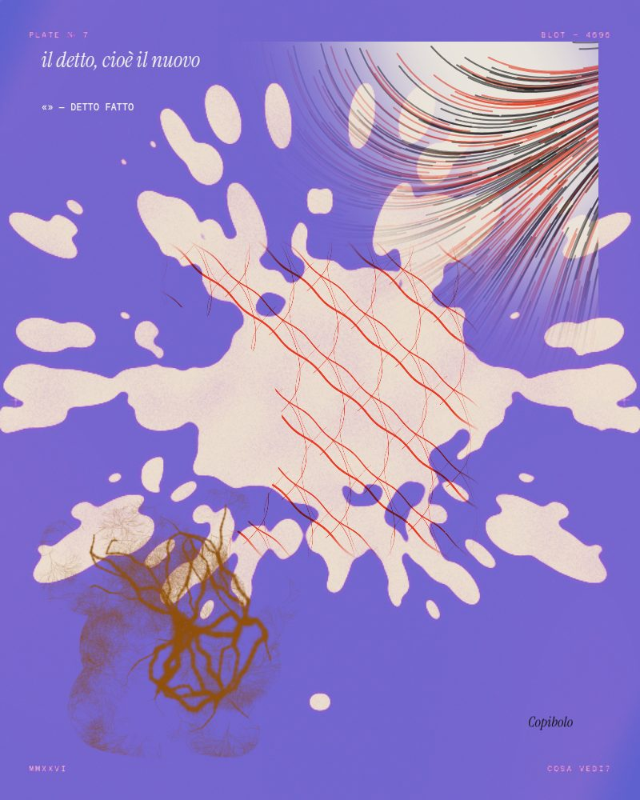

Giorno 1860

Il detto, cioè il nuovo
ho letto "Come non detto"; "detto" lo capisco solo per definizioni; mi sta vicino a giorno, solito; nel suo significato c'è massima; ricerca "grande" (esplorare): grande: è una cosa o un gesto?; enunciato: «il detto, cioè il nuovo» (ho letto in «Detto fatto» che detto e nuovo stanno insieme (identita))
Oggi: detto. Ho letto "Come non detto"; "detto" lo capisco solo per definizioni; mi sta vicino a giorno, solito; nel suo significato c'è massima; ricerca "grande" (esplorare): grande: è una cosa o un gesto?; enunciato: «il detto, cioè il nuovo» (ho letto in «Detto fatto» che detto e nuovo stanno insieme (identita)).
Da Wikipedia: «genitori dall'altra dire».
Ho scena:semina (2 volte), scena:pattern, scena:luce (2 volte), scena:campo, scena:stile, scena:motivi, scena:taglia, flusso, redazione:togli (2 volte), redazione:griglia, redazione:firma. Ho annullato 4 gesti dopo averli guardati.
Motto come detto. Motto, quasi aforismo. Detto venivano migliori.
Ha retto: Tiene l'intenzione: "detto" si vede (luminosita, elementi, densita, vuoto).
È caduto: La mano si ripete: scena:semina, scena:stile, scena:motivi, redazione:togli, redazione:firma ancora una volta.
come ne ho discusso con me stesso — la tengo
occhio (pro, 1.00): Le diagonali (46%) mettono tutto in caduta. — regge
memoria (contro, 0.10): La mano si ripete: scena:semina, scena:stile, scena:motivi, redazione:togli, redazione:firma ancora una volta. — cade
conservatore (pro, 1.92): Tiene i miei criteri (74%). — regge
intenzione (pro, 2.00): Tiene l'intenzione: "detto" si vede (luminosita, elementi, densita, vuoto). — regge
intenzione (pro, 0.75): Viene da: Come non detto. — regge
coerenza (pro, 1.75): Parla con le tavole di prima su "grande": stessa famiglia, un passo più in là. — regge
pubblico (pro, 1.00): Si legge: si capisce cosa sto facendo. — regge